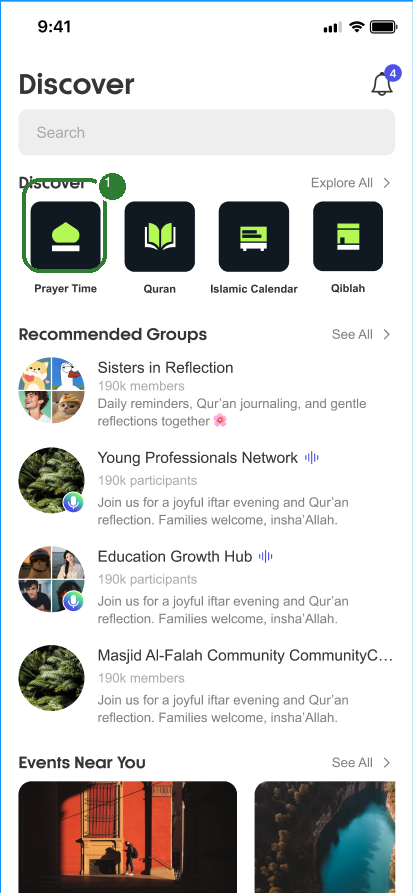
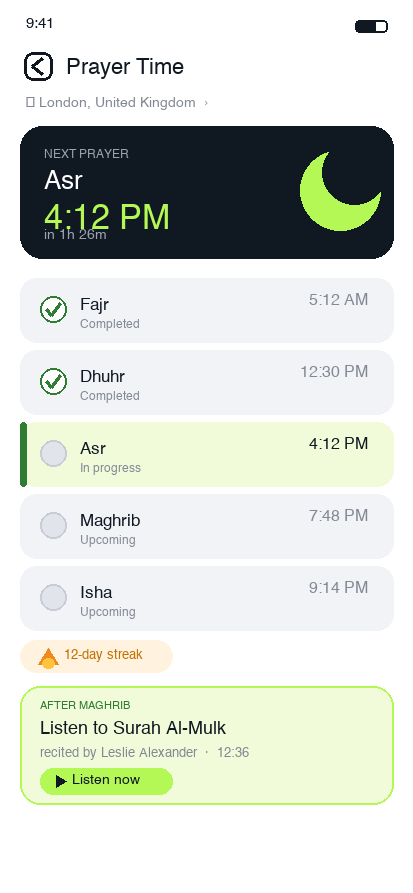
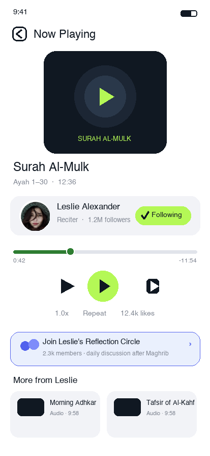
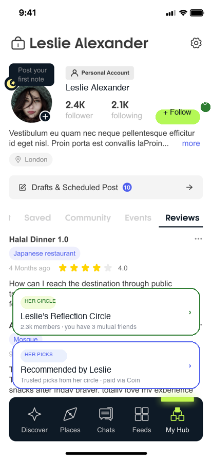
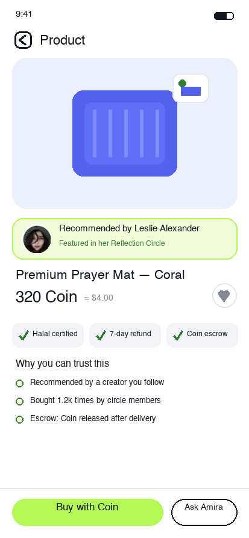

运营目标路径：打开祈祷工具形成习惯 → 祈祷时听诵 → 关注诵经作者 → 加入作者群组 → 因信任购买清真好物。核心机制：每一步的界面都埋着下一步的转化钩子，且钩子出现在情绪最高点（礼拜完成时 / 被内容打动时 / 群内信任建立时）。
打开祈祷工具
完成每日礼拜
形成固定习惯
承载：Prayer Time 工具页
祈祷时听经
喜欢作者的声音
浏览更多内容
承载：Audio Player 播放页
关注诵经作者
Feed 每天推送她的分享
理念越来越契合
承载：作者主页 + Feed
加入作者群组
参与讨论与活动
形成稳定互动
承载：Community / Group 页
信任作者推荐
购买清真产品
关系带动交易
承载：商品详情页（Coin 支付）





钩子只在情绪最高点出现；每次流失都有兜底路径把用户拉回漏斗。
| 步骤 | 关键交互 | 转化钩子（时机） | 流失兜底 |
|---|---|---|---|
| 01 祈祷 | 五次礼拜打卡 + 连续 streak（12-day flame）+ 下场礼拜倒计时，形成每日固定回访 | 礼拜完成瞬间弹出「After Maghrib · Listen to Surah Al-Mulk」听诵钩子卡——反思时刻最容易被声音打动 | 当晚未听 → 次日 Feed 顶部再推同一段；连听 3 天送 streak 加成 |
| 02 听诵 | 播放页沉浸式：诵段 + 作者信息同屏；可变速 / 循环；「More from Leslie」继续浏览 | 播放 ≥60s 或完成一段后，作者卡 Follow 按钮从灰变品牌绿微动效 + 群组 banner 常驻 | 未 Follow 退出 → Feed 次日推荐该作者内容（带「你最近在听」标记） |
| 03 关注 | 主页 + Follow（原稿缺他人主页视图，此处补）；关注成功即默认开启「她的新内容」通知 | 关注成功页顺延展示她的群组浮卡（不要弹窗打断） | 只关注不入群 → Feed 每日推送她的分享（运营路径本意），群帖带「成员在讨论」标记 |
| 04 入群 | 入群页作者群组置顶（FROM LESLIE 标签 + 3 位共同好友背书）；Preview 先看再 Join | 入群成功欢迎语内嵌圈内专属优惠预告；每日 Maghrib 后固定讨论活动养成回访 | 入群未发言 → 群内 @ 一次共同好友话题；7 天不活跃降频不退群 |
| 05 购买 | 商品详情页：作者推荐背书横幅 + 「Why you can trust this」三条信任理由 + Coin 托管（确认收货后放款） | 首单 圈内专属价 + 「Bought 1.2k times by circle members」从众背书；Ask Amira 一键问作者 | 加购未付 → Coin 余额提醒 + 群内限时提醒一次；支付失败走 Wallet Top Up 快捷链路 |